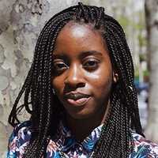

Hi, I’m Omayeli Arenyeka, a programmer and artist. At XOXO Fest this year, I gave a talk titled “Creative Savior Complex” (CSC), which is a name for an attitude among creatives—one that I, too, have been guilty of—that is detrimental to activism because it prioritizes ourselves and our tools for creation over the actual good being done. CSC is based on the phrase “White Savior Complex” which, broadly, is when a person (who is usually white) believes they are “helping” underprivileged non-white people when they are likely not.
Signs of those exhibiting a Savior Complex include:
At its least harmful, White Savior Complex causes a lot of money to be wasted in order to, for example, give children sneakers and headphones that are of little to no use to them. At its most harmful, it can lead an entire community being colonized Creative Savior Complex works in similar ways: without proper consideration, many of the ways we try to help as creatives may mean valuable resources that could’ve done a lot of good are wasted, or, at its worst, it can lead to people getting hurt.
I’m writing this guide with the hope that the questions that have grounded me as I explore the intersection of technology, art, and social good can also ground you as you try to use your creativity to do good.
There are many ways to “do good.” CSC comes up in situations where (as you may have guessed) you are trying to do good by putting your creative skills to use. Now, this could mean a lot of things. You could be designing posters, or coming up with clever chants for a protest. You could be volunteering to design a website for an organization, or writing a think piece about how blockchain technology could stop voter suppression.
So how can you tell if your efforts to do good are veering into CSC territory? Let’s examine a few of the most popular ways people try to make a difference:
Doing good by donating money to an organization or cause
An often overlooked and legitimate form of doing good, donating money is the avenue with the least risk of CSC. That’s because:
Interestingly, the reasons why it is low-risk for CSC are some of the same reasons we (as creative people with funds) list for forgoing making a donation in favor of other approaches, like volunteering and social impact projects.
Protesting
I don’t have experience with organizing, so I won’t talk about this much, but the activist group Showing Up for Racial Justice Chicago (SURJ-Chicago) wrote a set of guidelines for allies who engage in rallies. As with countering CSC, their guidelines focus on the importance of de-centering yourself and, instead, centering the community affected.
For example, one of the guidelines is to “direct media to Black leadership.” They say while “it will be flattering and tempting when media approaches you,” it’s important to recognize “you are not a spokesperson for this movement. Redirect media to Black leadership who are.”
Creating a social impact project
The possibilities of social impact projects are limitless, and because of this, they have the highest potential to exhibit signs of CSC. What puts something in the “social impact project” category is that it’s [usually] not done in partnership with an established group or organization. Instead, it’s your own thing that makes use of your (creative) skills.
Some examples of social impact projects are:
In all of the above cases, CSC can be avoided by having clear objectives for what the project aims to achieve, and by taking a close look at exactly who, how, and why you plan to help. If you’re considering your own social impact project, read on to understand how you can avoid veering into CSC territory, and ensure that your efforts to do good will actually make a difference.
While it would be best if you weren’t concerned with getting something in return for the time you spend on a social impact project, a lot of times that’s not the case. So, to put it simply: what do you really want to get out of your efforts to help? Your objectives influence not only the way you decide to help, but also how much good comes out of your actions.
If you’re trying to do good, ask yourself what you’re really hoping to accomplish. Some example objectives are:
Technologist, educator, and organizer Nabil Hassein worked on a project where he visualized NYC criminal court summonses. In his blog post, he expressed that his goals were to “learn modern frontend web development, data cleaning, analysis, and visualization.” While he mentioned he hoped the project “might be of interest to other activists,” he admitted he “gave this aspect of the project less emphasis than the tech aspect.” While Nabil is actively involved in several activist projects like NoNewJailsNYC and SurvivedAndPunished, for this particular project, his objectives were different.
While we may start a social impact project with the idea of simply “doing some good,” we may realize that through the project we take on, there is actually much more we want to gain. Sometimes we start with wanting to create one thing, and in the process of choosing what to make, decide we want it to do some good. Other times what we really want is to feel good, and while doing good would be an added bonus, we don’t really care too much if it does good or not. If we go back to the option of making monetary donations as a way to do good, often the reason we forgo that option is because our goals aren’t just to do good—we want something else, too.
Let’s explore some different ways you might be thinking about your project’s objectives:
When doing good is an added bonus, but not an objective.
It’s fine if doing good is not an objective of the work you do as a creative. What’s more important is that you—as a person—are engaged and actively working towards a more equitable society in some form or another. There are people who cannot help but be political with their work—people who make political work out of urgency and/or self-preservation—but not everyone is like that.
Your creative work can be apolitical. It’s ok to work on a portfolio piece, it’s ok to be expressive, and it’s ok to create something that encourages play, fuels escapism, or is just for yourself. Your work doesn’t have to be a solution to a problem, but consequently, you can’t frame it as such if it isn’t. You have to be honest about your intentions and your output, especially when people’s lives are involved.
When doing good is an objective.
Having objectives in addition to doing good isn’t inherently bad. Problems arise when your other objectives conflict with actually doing good, and when you don’t think critically about the impact your decisions make. For example, if you’re volunteering as a designer for a charity and a PDF would be best for their users, but you need a fancy website for your portfolio, you may be tempted to make a decision that aligns with the latter objective. However, this decision would be bad for the charity, and if doing good truly is your objective, you must be ready to set aside your personal concerns and goals when needed.
So you’ve decided doing good truly is an objective of your project. Even once you’ve made this distinction, actually doing good requires much more than merely having the intention to do good. Our decisions, no matter how small, have unforeseen ripple effects. Those effects are multiplied when our decisions involve other people. Unintended ripple effects can be avoided or minimized when we understand the people and the issues we’re trying to help.
So, ask yourself: Are you a member of the community you’re trying to help, either in actuality or by proximity? “In actuality” means yes, you are a part of the community. For example, if you’re trying to help the homeless community, this would mean you’ve been homeless at some point. “By proximity” means that while you yourself aren’t part of the community you’re trying to help, you have a close relationship to someone in that community.
Of course, it’s not a requirement that you be a part of the community you’re trying to help—just know that there are issues that may come up if you aren’t careful. What being a part of a community that deals with an issue can give you is an intimate understanding of the problem at hand. So, if you’re not part of a community, you have to find ways to make sure you deeply understand the problem.
To get a sense of your familiarity with the problem at hand, ask yourself:
If you don’t understand the problem and you haven’t engaged with the affected communities or groups, you may end up:
Now onto the next most important question:
In 2016, Amélie Lamont, Catt Small, and Jacky Alciné—who are black creatives working in the tech industry—created Good for PoC, a site that enabled people of color to compare the inclusivity of tech employers. In September of 2018, they decided to close the site and instead use the remaining funds to sponsor educational opportunities for people of color in design and technology.
Why did they make the decision to shut down the original project? Small talked about their reasoning in an interview, saying at first their thought process was: “Things are bad, let’s make a website.” But as they got into it, they found things were more complicated. They would highlight a company as “Good for POC” but then get a conflicting report. They realized they weren’t equipped to tackle the issue as well as other people in the space who had more time and ability, and therefore decided they would “find other ways we as designers and engineers of color can contribute to the space in a valuable way.”
Sometimes, in the process of engaging with people or information, we might find that what is needed isn’t in line with what we have to offer. If and when this happens, we can always find other ways to contribute.
So you “made a thing” and one of your objectives was to do some good. The last step in the doing-good process is to verify that what you made actually does the good you say it does.
To start with, “doing good” as a goal is very vague and expansive. While you can be driven by a lofty, hard-to-quantify purpose, the goal of your actions or work should be more specific. If (one of) your objective(s) is to do good and not just to be expressive or make something for yourself, you should set a reasonably thought-through intention for what success (however you measure that) would look like. Keep in mind, the work you do can either solve a problem or plant seeds to inch towards a reality you want—the important thing is to be clear about what exactly it is your impact project is trying to accomplish.
For example, although one purpose of The New Inquiry’s Bail Bloc project is its functionality—which is to use a small part of users’ unused computer processing power to mine cryptocurrency to pay people’s bail—the creators also say that it’s “as much about catapulting a radical criticism of bail into the public imagination as it is about raising bail funds via cryptocurrency.”
So, back to the question: does what you made do what it says it does? If yes, that’s great. If no, that’s also okay. But you should be willing to step back and let go if need be.
While [insert creative tool, approach, or project] can be very magical and useful, it’s not—and we as individuals are not—the answer to everything. When exploring how to do good using our creative skills, it’s important to recognize that doing good, as Teju Cole conveys in his article, White Savior Industrial Complex, is so much more than the vague notion of “making a difference,” and is so much more than our intentions. Even with good intentions our work can still cause harm, so before you explore how your creative skills can save the world, examine your objectives and your relationship to the problem, check in with with the community affected, and remember that there are plenty of ways to contribute.
Omayeli Arenyeka
Artist, Technologist
Omayeli Arenyeka is a Nigerian artist and technologist currently based in San Francisco. She’s interested in the intersection of technology, art, and activism. Her work aims to use writing, data, code, and satire as tools to foster disillusionment with our current realities. She’s an alum of the School for Poetic Computation and the Recurse Center. Her latest work, The Gendered Project, is a growing library of gendered words in the English dictionary. It aims to provide data to use in our ongoing dialogue about sexism and how it permeates every facet of our daily lives, all the way down to the words we use.